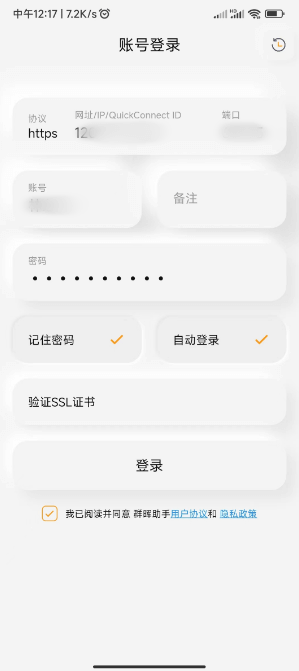
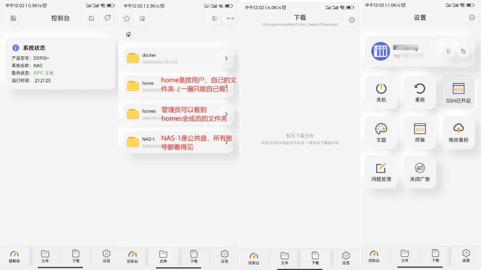

群晖Synology移动端
下载
下载 Synology Assistant 移动应用程序，安卓系统直接在应用商城搜索“群晖助手”，苹果系统在App store搜索，出现的可能是叫“派派助手”（是一样可用的）。
登录
打开 Synology Drive App，输入如下地址和账号密码：
查看
这里重点留意文件夹的查看权限，现在的NAS是打开家目录的，所以会有【home】和【homes】的两个文件夹位置，
- home：是按用户，自己的文件夹(一遍只能自己看到)
- homes：是管理员可以看到全用户的文件类